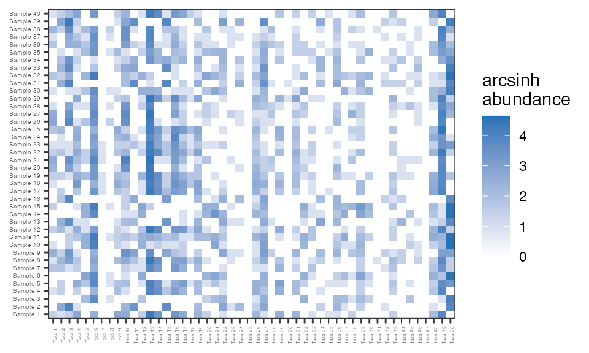
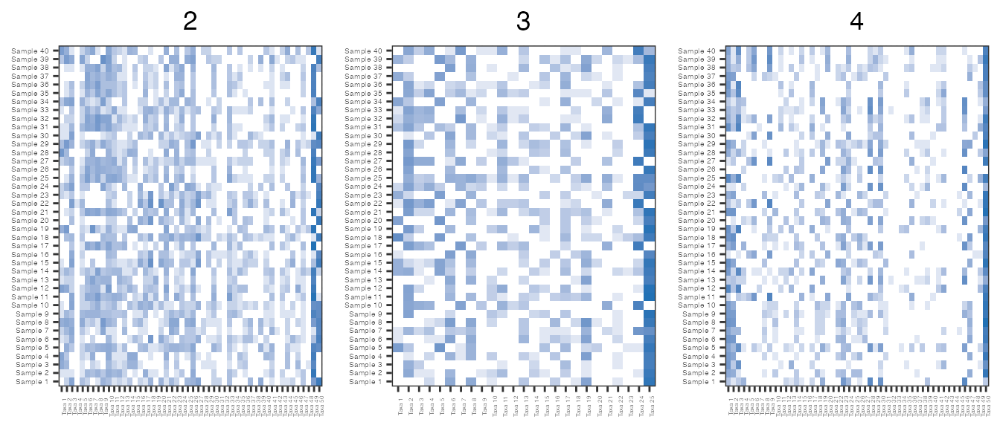
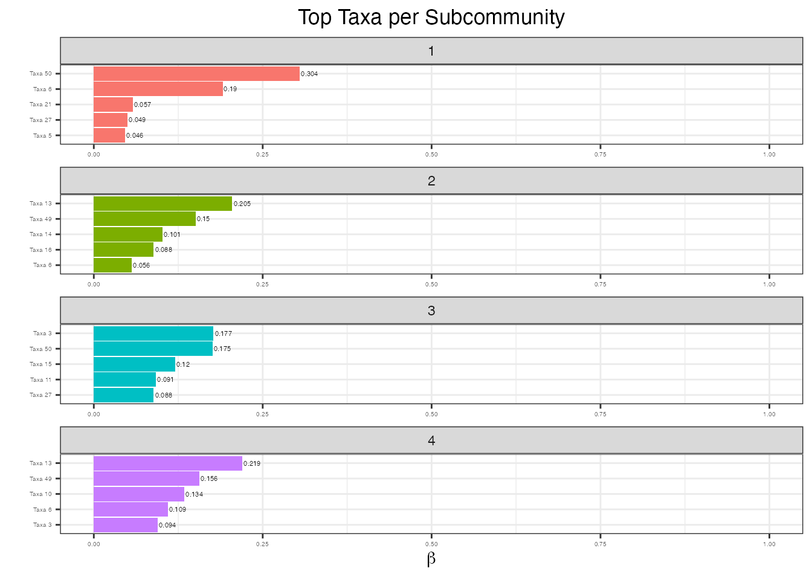

zinLDA-vignette.Rmdlibrary(zinLDA) library(dplyr) library(ggplot2) library(gridExtra) library(purrr) library(reshape2) library(tidytext)
The zinLDA package provides a Markov chain Monte Carlo implementation of a Zero-Inflated Latent Dirichlet Allocation (zinLDA) model. It also provides a simulation algorithm for generating sparse count data from an underlying zinLDA model.
Zero-inflated latent Dirichlet allocation is an unsupervised, hierarchical, generative probabilistic model. It is flexible enough to be applied to count data in a wide range of fields from text analysis to bioinformatics. In particular, when applied to microbial 16S rRNA gene sequencing studies, which are notoriously high dimensional and sparse, it is a powerful method for dimensionality reduction and detection of potentially biologically meaningful sparse clusters of taxa. These clusters of taxa are called subcommunities here.
The zinLDA model assumes that a single microbial sample contains \(K\) different underlying subcommunities with varying probability. In terms of the generative model, this means that zinLDA samples the latent subcommunity indicator once per 16S sequencing read, as compared to the Dirichlet-multinomial mixture model, commonly used in microbiome studies, that assumes the subcommunity label is the same across all sequencing reads within a microbial sample. Furthermore, zinLDA assumes that each taxon can be assigned a probability of belonging to each of the \(K\) subcommunities.
In particular, zinLDA adapts the original Latent Dirichlet Allocation (LDA) model of Blei, Ng, and Jordan (2003) to better handle sparse count data by assuming that these taxa per subcommunity probabilities are sparse, meaning that some, if not many, of them are equal to zero. By doing so, within each subcommunity, the zinLDA model differentiates structural zeros, taxa that truly do not belong to the community, from sampling zeros, taxa that do contribute to the community but due to low sequencing depth were not captured.
Before giving the model specification for zinLDA, it is important to define the notation of key variables and model parameters that will be used for the remainder of this vignette.
For a single 16S rRNA gene sequencing sample define:
Now a generative probabilistic model for zinLDA can be defined as follows:
The key difference of this generative model and that of LDA is the addition of the Zero-Inflated Generalized Dirichlet (ZIGD) distribution on \(\boldsymbol{\beta}^{(j)}\), the taxa distribution for subcommunity \(j\). The ZIGD distribution is parameterized by \(\pi, a,\) and \(b\). Here, \(\pi\) is the probability of being a structural zero, while \(a\) and \(b\) are the parameters of a generalized Dirichlet distribution, an extension of the Dirichlet distribution with a more flexible covariance structure. The additional covariance parameters enable ZIGD to better capture the complex dynamics and heterogeneity between microbial taxa. Additionally, this distributional specification is what allows zinLDA to capture both sampling and structural zeros.
Below is an outline on how to simulate realistic microbiome data from a zero-inflated latent Dirichlet allocation model using the simulateZINLDA() function. First, let’s assume the cohort of interest consists of 40 microbial samples and that the total number of sequencing reads per sample is drawn from a discrete uniform distribution with lower bound 100 and upper bound 500. It should be noted that the sequencing depth of a typical 16S rRNA gene sequencing microbial sample is on the order of thousands or tens of thousands of reads per sample. The small number of sequences reads was selected to ease computation time.
Moreover, let’s assume that there are 50 unique microbial taxa that are present across the 40 subjects, each with a probability of belonging to the four underlying subcommunity structures. For hyperparameter specification, \(\alpha\), the parameter indexing the Dirichlet distribution on \(\theta\) is set to a default value of 0.1, as recommended in the Gibbs sampling implementation of the original LDA model. The value of \(\pi\), \(a\), and \(b\) are set to 0.4, 0.5, and 10, respectively.
set.seed(1) N.d = zinLDA::rdu(n = 40, min = 100, max = 200) sim1 = zinLDA::simulateZINLDA(D = 40, V = 50, N = N.d, K = 4, Alpha = 0.1, Pi = 0.4, a = .5, b = 10)
The simulateZINLDA function returns a list with six elements. The first, cohort, is a D-length list containing the taxonomic assignment of each sequencing reads in the D samples. Below is the first six taxa assignments of the first sample:
head(sim1$cohort[[1]]) #> [1] "Taxa 43" "Taxa 13" "Taxa 13" "Taxa 16" "Taxa 14" "Taxa 49"
Second is z, another D-length list containing the subcommunity indicator for each of the taxonomically assigned sequencing reads in cohort. Below shows the subcommunity assignments for the first six sequencing reads of the first sample:
head(sim1$z[[1]]) #> Taxa 43 Taxa 13 Taxa 13 Taxa 16 Taxa 14 Taxa 49 #> 3 3 3 3 3 3
Next, sampleTaxaMatrix is a \(D \times V\) matrix containing the count data of interest. Each row of the matrix can be thought of as a V-length vector of taxon counts for a single sample. Below are the counts of the first five taxa in the first five samples:
sim1$sampleTaxaMatrix[1:5,1:5] #> Taxa 1 Taxa 2 Taxa 3 Taxa 4 Taxa 5 #> Sample 1 2 1 2 8 0 #> Sample 2 0 7 29 1 0 #> Sample 3 0 0 0 0 4 #> Sample 4 1 2 0 2 0 #> Sample 5 0 2 0 7 3
The last three elements are three matrices: \(D \times K\) matrix theta, \(K \times V\) matrix beta, and \(K \times V\) matrix delta. The first two contain the subcommunity per sample probabilities and the taxa per subcommunity probabilities, respectively. While delta is a matrix of 0s and 1s identifying which taxa are sampling zeros in each subcommunity. Below are the first few entries of each:
sim1$theta[1:5,] #> Community 1 Community 2 Community 3 Community 4 #> Sample 1 6.783018e-03 0.002874889 9.077920e-01 8.255006e-02 #> Sample 2 9.678068e-01 0.020301022 1.189214e-02 5.524276e-13 #> Sample 3 3.478782e-05 0.985956309 1.269506e-13 1.400890e-02 #> Sample 4 1.070988e-04 0.003240278 9.825775e-01 1.407510e-02 #> Sample 5 7.562609e-04 0.251068287 7.481754e-01 9.948178e-08 sim1$beta[,1:5] #> Taxa 1 Taxa 2 Taxa 3 Taxa 4 Taxa 5 #> Community 1 0.000000000 4.816090e-02 0.1791166975 0.004059997 0.00000000 #> Community 2 0.002044051 7.237084e-05 0.0000000000 0.000000000 0.04503479 #> Community 3 0.010152121 1.258581e-02 0.0000482654 0.036234391 0.00000000 #> Community 4 0.035341655 0.000000e+00 0.0934088401 0.015919066 0.01391503 sim1$delta[,1:5] #> Taxa 1 Taxa 2 Taxa 3 Taxa 4 Taxa 5 #> Community 1 1 0 0 0 1 #> Community 2 0 0 1 1 0 #> Community 3 0 0 0 0 1 #> Community 4 0 1 0 0 0
Since microbiome data is typically very sparse let’s calculate the sparsity, defined as the percent of zeros, of the simulated count data.
sparsity = function(sim){ length(which(sim$sampleTaxaMatrix==0))/prod(dim(sim$sampleTaxaMatrix)) } sparsity(sim1) #> [1] 0.489
The sparsity of the taxon count matrix is 48.9%, which is on par with that of species count matrices filtered to a prevalence of 20% from large microbiome studies such as the American Gut Project. It is helpful to visualize the sparsity of a matrix using a heatmap. Below is a heatmap of the arcsinh-transformed taxon counts from simulation, the y-axis lists the samples and the x-axis the taxa. The white represents a count of zero while the darker the blue indicates a larger count.
abunHeatmap = function(sim){ reshape2::melt(asinh(sim$sampleTaxaMatrix)) %>% dplyr::rename(sample = Var1, taxa = Var2, asinh.abun = value) %>% ggplot2::ggplot(., aes (x = taxa, y = sample, fill = asinh.abun)) + ggplot2::geom_tile() + ggplot2::theme_bw() + ggplot2::labs(fill = "arcsinh\nabundance") + ggplot2::theme(plot.title = element_text(hjust = 0.5), axis.title.x=element_blank(), axis.title.y=element_blank(), axis.text.x = element_text(size=3, angle=90), axis.text.y = element_text(size=4)) + ggplot2::scale_fill_gradient(low="white", high="#2171b5", na.value = "grey") } abunHeatmap(sim1)

Below the hyperparameter values are varied in different simulations to demonstrate how hyperparameter choice influences the sparsity of the resulting taxon counts. Sparsity is strongly influences by the probability of being a structural or sampling zero. It is expected that increasing the probability of being a sampling zero increases the sparsity, while shrinking some of the \(\beta_{ij}\) towards 0 will increasing the number of sampling zeros and therefore the overall sparsity.
For example, changing the values of \(a\) and \(b\) in sim2 increases the median value of \(\beta_{ij}\) meaning that the probability of observing a structural zero decreases, thus in turn decreasing the overall sparsity of the matrix. Conversely, decreasing \(V\) in sim3, while holding all other parameters values constant, decreases the median of \(\beta_{ij}\) and increases both the probability of being a sampling zero and the sparsity of the matrix. Lastly, increasing \(\pi\) in sim4 increases the probability of being a structural zero and the sparsity of the matrix.
sim2 = zinLDA::simulateZINLDA(D = 40, V = 50, N = N.d, K = 4, Alpha = 0.1, Pi = 0.4, a = 1, b = 25) sim3 = zinLDA::simulateZINLDA(D = 40, V = 25, N = N.d, K = 4, Alpha = 0.1, Pi = 0.4, a = .5, b = 10) sim4 = zinLDA::simulateZINLDA(D = 40, V = 50, N = N.d, K = 4, Alpha = 0.1, Pi = 0.7, a = .5, b = 10) sim.ls = list(sim2,sim3,sim4)
lapply(sim.ls, sparsity) #> [[1]] #> [1] 0.394 #> #> [[2]] #> [1] 0.517 #> #> [[3]] #> [1] 0.639 asinh.abun.hmp = purrr::map2(sim.ls, 2:4, function(x, y) { abunHeatmap(x) + ggplot2::ggtitle(y) + theme(legend.position="none") }) count.hmp.ls = do.call("grid.arrange", c(asinh.abun.hmp, ncol=3))

Another advantageous feature of using zinLDA to simulate realistic microbiome data is that it can provide some information about the number of taxa that are missed due to low sequencing depth. For example, sim1 and sim4 both contain taxa that have zero counts for every sample in the cohort, thus in a real microbiome data set these taxa would not be observed.
Now let’s assume this data was not simulated and the true values of \(\boldsymbol\beta\) and \(\boldsymbol\theta\) are unknown. A zinLDA model can be fit to the data to estimate them. Below, we set the number of latent communities and the hyperparameters to their true values as specified under simulation. Though, in general, picking the number of subcommunities, or clusters, is a difficult question to answer. Ideally, biological or clinical reasoning would inform the choice of \(K\), if available. Otherwise, data-driven approaches, such as fitting multiple zinLDA models to a subset of the data and selecting the one that gives the smallest log-likelihood or AIC, can be used.
modelFit1 = zinLDA::zinLDA(sim1$sampleTaxaMatrix, K = 4, alpha = .1, pi = 0.4, a = .5, b = 10) posteriorEsts = zinLDA::posterior(modelFit1)
Any given subcommunity can be described by its representative taxa, defined as the taxa with the highest probability of belonging to that community. Here the five taxa with the the highest probability, \(\beta_{ij}\), for each of the four subcommunities are plotted.
reshape2::melt(posteriorEsts$beta) %>% dplyr::rename(community=Var1, taxa=Var2, beta=value) %>% dplyr::group_by(community) %>% dplyr::top_n(5, beta) %>% dplyr::ungroup() %>% dplyr::arrange(community, -beta) %>% dplyr::mutate(taxa = tidytext::reorder_within(taxa, beta, community)) %>% ggplot2::ggplot(aes(taxa, beta, fill = factor(community))) + ggplot2::geom_col(show.legend = FALSE) + ggplot2::facet_wrap(~ community, scales = "free", nrow = 5) + ggplot2::coord_flip() + tidytext::scale_x_reordered() + ggplot2::labs(title = "Top Taxa per Subcommunity") + ggplot2::ylab(expression(beta)) + ggplot2::xlab("") + ggplot2::ylim(0, 1) + ggplot2::theme_bw() + ggplot2::theme(plot.title = element_text(hjust = 0.5), axis.text.x = element_text(size = 4), axis.text.y = element_text(size = 4)) + ggplot2::geom_text(aes(label = round(beta, 3)), hjust = -.1, size = 1.5)

Other downstream analyses that may be of interest are using the using the subcommunity per sample distributions in a compositional regression to identify clinical covariates associated with subcommunity types or using the subcommunity per sample distributions to identify population-level clusters of subjects using hierarchical or k-means clustering.